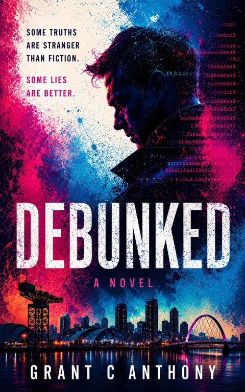

Psychological thriller
Debunked
Some truths are stranger than fiction. Some lies are better.
Callum Ferris makes his living on a Glasgow podcast, taking apart claims of the paranormal. Then his grandmother, on her deathbed, says something she had no way of knowing. Following a run of deaths among fringe consciousness researchers, he finds an operation that turned the strangest science of the last century into a trading edge, and people prepared to kill to keep it.
Out nowFind it on Amazon